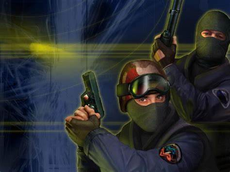
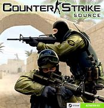
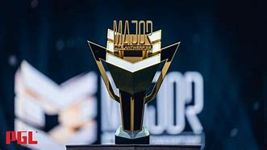

O jogo iniciou em 1999 como um mod do jogo Half Life, foi criado por Minh Gooseman Le e Jess Cliffe.
O Mod rapidamente ganhou notoriedade pela comunidade devido ao seu estilo de jogo contendo duas equipes uma terrorista e a outra contra terrorista.

Franquia
O jogo iniciou como um Mod do Half Life mas depois a Valve adquiriu o mod e o transformou em um jogo oficial, dando origem a diversos titulo como:
Cs 1.0 2000, ganhou versoões como o 1.3, 1.5 e 1.6.
Cs source 2004, primeiro a usar a engine source, mas menos popular que o 1.6.
Em 2012 o CS Global Offensive, que se tornou o pricipal jogo.
Em setembro de 2023 foi lançado o Cs2 como novo jogo trazendo invoações gráfias e de mecânicas, mas a maioria da comunidade não considera ele tão bom quanto o CS:GO.
Curiosidades
São Paulo tem um mapa exclusivo;
>Começou apenas com o modo resgate de reféns;
Foi possivel jogar CS:GO em consoles;
Já teve versões single-player;
Times já tiveram hamburguer no McDonalds

Atualmente
Atualmente o jogo se econtra em um "bom" estado porém enfestado de xiters(hackers), que acabam atrapalhando a experiencia de jogo.
Cenário Competitivo
Os campeonatos mais importantes São os Majors, que são organizados pela Valve e acontecem duas vezes por ano, onde as melhores equipes do mundo se enfrentam após os qualificatórios.
ESL Pro Tour
Inclui torneios como:
ESL Pro League
IEM Katowice
IEM Cologne.

Aqui está um video dos melhores momentos dos campeonatos.